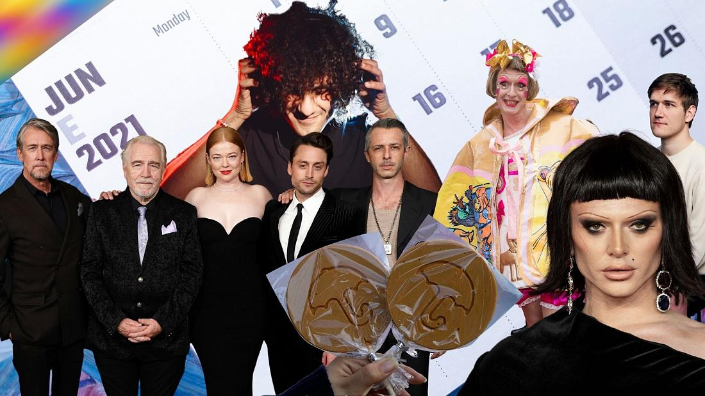
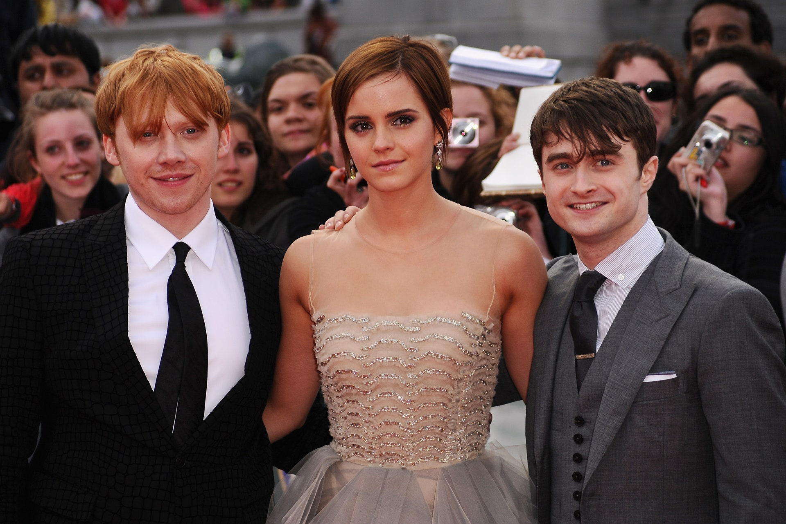
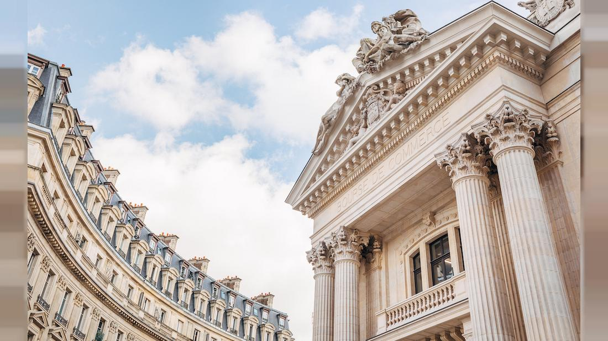
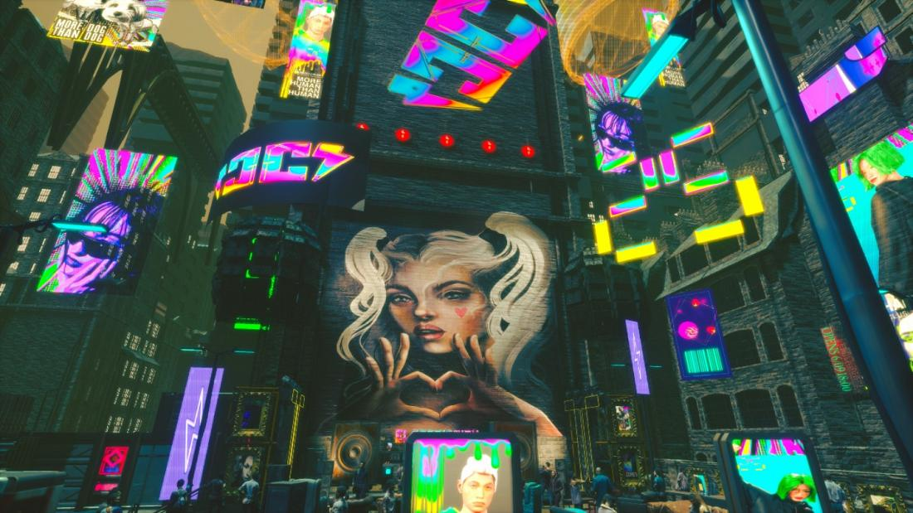
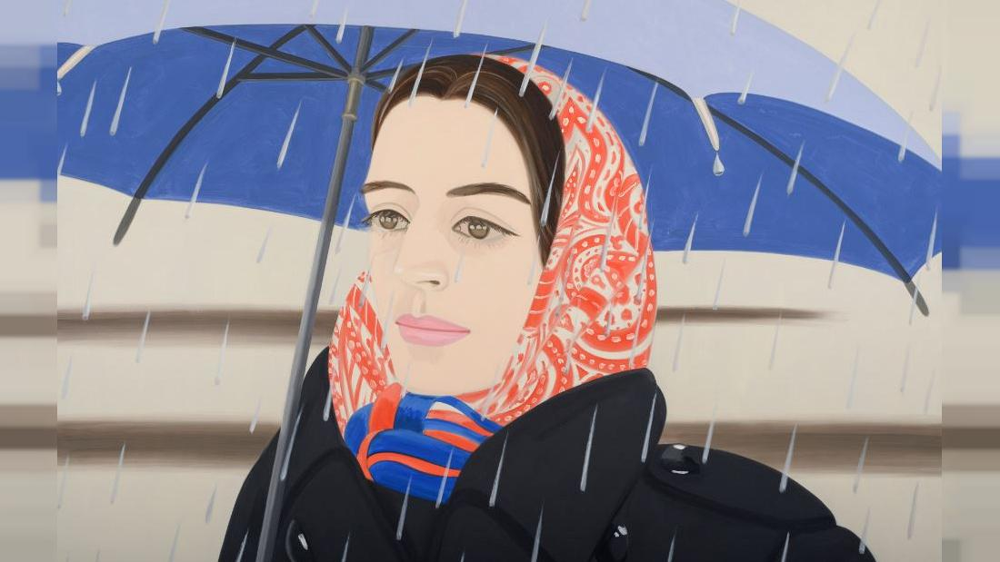

Brief News

From Squid Game to Belgrade: Our team's cultural highlights of 20212021 was no walk in the park, but it had its saving graces. Namely, the type of things we write about here at Euronews Culture every single day. You'd be stuck to find anybody that didn't seek comfort in literature, art, music: something tangible to keep all of the anxieties at bay. In fact, culture has never been more essential for making sense of – and avoiding, in some cases – events that comprised one turbulent year. Our team at Euronews Culture got together to discuss the sights and sounds that liberated and encouraged them to spark their senses. Here's what we came up... See more |
 |
|---|---|
Harry Potter's return to Hogwarts: How a boy wizard made Europe feel the magicThis November marked the 20th anniversary of the first Harry Potter film. To celebrate, the cast behind the world's best-loved wizarding franchise are getting together for 'Return To Hogwarts', airing on Sky, HBO Max, and NOW TV on New Year's Day. It'll be the first time Daniel Radcliffe, Emma Watson, and Rupert Grint have appeared on-screen together since promotion wrapped for 'Harry Potter and the Deathly Hallows: Part 2' in 2011, so naturally there's a lot of buzz surrounding the 2-hour special. Not only that, but fans can expect appearances from Helena Bonham Carter (Bellatrix Lestrange), Robbie Coltrane (Rubeus Hagrid), Ralph Fiennes (Lord Voldemort) along with the producers and directors responsible for crafting their favourite. There are no doubts that the Wizarding World has had a profound impact on Europe. From what we eat, to how we think about fan culture. Here are some of the ways the wizarding world reshaped parts of our entertainment...See more |
 |
Art trends 2022: The growing influence of independent art spaces.On 8 December, the PinchukArtCentre in Ukraine named the young Afghan artist Aziz Hazara as the winner of one of the world’s most valuable art awards, the Future Generation Art Prize 2021. Receiving a cash prize of $60,000 (€52,926), plus an additional $40,000 (€35,284) towards the production of new work, Hazara was selected by a seven-strong international jury that included the Italian curator Jacopo Crivelli Visconti, Indian artist Shilpa Gupta, and the director of London’s Hayward Gallery, Ralph Rugoff. In a statement included in the announcement, the jury described Hazara’s multichannel video installation ‘Bow Echo’ as “an ephemeral and compelling monument in our present moment.”...See more |
 |
Fashion 2022: How are designers getting to grips with the metaverse?Imagine a world where your digital identity is as important as your real-life one. Where you need assets and belongings for your virtual self like money (cryptocurrency), a home (perhaps built on Minecraft) and clothes. As we increasingly live our lives online, fashion brands are betting on the idea that some consumers are already there with the launch of digital clothing collections and collaborations with gaming platforms. In 2022, the hottest trends and most anticipated launches won’t be heading down the catwalk, they’ll be playing out on our screens as designers explore the metaverse...See more |
 |
Art Trends 2022: Figurative Art - a return to representationBuffeted by the arrival of abstract art in the 20th century and threatened with being rendered irrelevant by much of contemporary art, figurative artists have long been accustomed to having to fight their corner. In recent years, however, the increasing prominence of new figurative work - or at least pieces that contain strong figurative elements - has been a notable feature in exhibitions at top galleries and institutions. The effect has been such that many industry players have talked about a ‘resurgence’ in figurative art. In truth, this is a genre that has never gone away and certainly hasn’t buckled to the recurring threat that “painting is dead”. Even at times when non-representational art has dominated the limelight, new trends in figurative art such as pop art and photorealism, and prominent individual artists - from Lucien Freud and David Hockney, through to Michaël Borremans and Wilhelm Sasnal - have ensured ongoing relevance. That being said, it’s clear that figurative work is currently basking in the art world’s sunlit uplands...See more |
 |